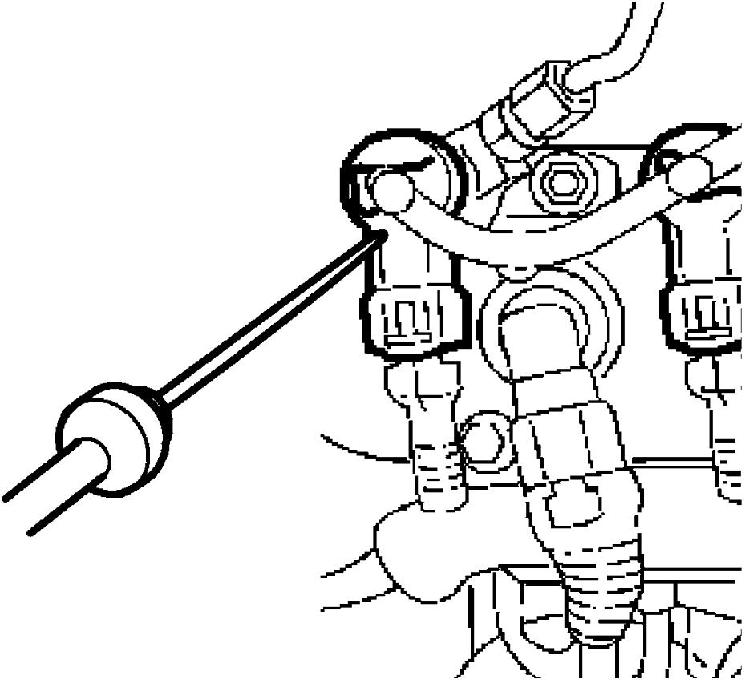
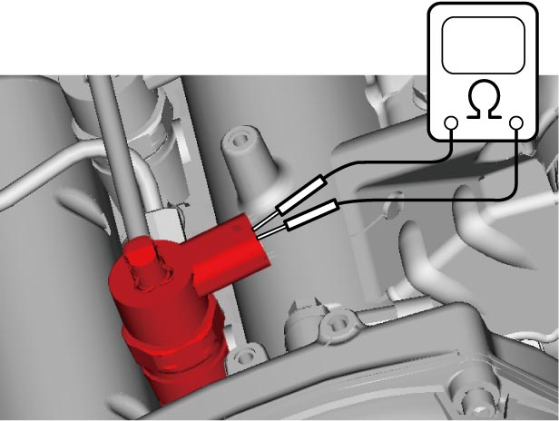

1G
| Fuel Injector On-Vehicle Inspection |
1)Using sound scope or the like, check operating sound of fuel injectors when engine is running or cranking.
Cycle of operating sound should vary according to engine speed.
If no sound or an unusual sound is heard, check that result of each step is in good condition.

Cycle of operating sound should vary according to engine speed.
If no sound or an unusual sound is heard, check that result of each step is in good condition.

 "Expand image")
2)Disconnect connector from fuel injector.
3)Connect ohmmeter between terminals of fuel injector and check resistance.
If resistance is not as specified, replace fuel injector.
If resistance is not as specified, replace fuel injector.
Resistance of fuel injector
About 0.5 Ω

 "Expand image")
4)Connect connector to fuel injector securely.